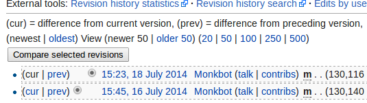

What is version control?
Let's imagine...
You and some classmates have just been assigned a paper to write. One of you volunteers to write a first draft, which they send to everybody else. You and two other classmates, separately, add some paragraphs and correct some spelling errors in the text. How do you synthesize those changes into a single, up-to-date document? By hand?
And what if you make a change and then decide that you prefer the old version?
Version control to the rescue!
Version control helps you keep track of the specific changes that get made. It lets you merge contributions from multiple people, and switch back to previous versions of the project easily.
This is pretty helpful for a small class project.
But imagine how vital it is to larger projects. Like, say, an open source project with millions of contributors and billions of users.
Such a project exists! Can you guess what it is?
Taking a closer look
Let's visit Wikipedia.
Every Wikipedia page, including the main page, has a special view. You can find it in the top right-hand corner of the screen: it says "View History". Pick a page -- any page -- and find the "View History" tab. Then click it.

This page shows you every change ever made to the page. These changes are saved as "diffs". Diffs are a list of the changes or differences between two versions of a file. If you want to learn more about diffs, try the OpenHatch diff and patch training mission.
Wikipedia displays diffs in its own particular way. Select two revisions and click "compare selected revisions" to view it.
(Click on the image to go to the diff itself.)
The diff includes information about:
- what got added (in blue) and what got deleted (in yellow)
- the lines of the documents the deletions were on
- who made the change
- when they made it
- why they made it - the "commit message"
- how to view the previous version and the new version
(click on the bolded "revision as of...")
That's Wikipedia. It runs on a piece of software called Mediawiki. That's one version control system. What others are there?
And what's the difference between a version control system and a repository and a host, anyway?
Version control works on more than just code! You can use it to host poetry, resumes, laws and more. What else can you find?